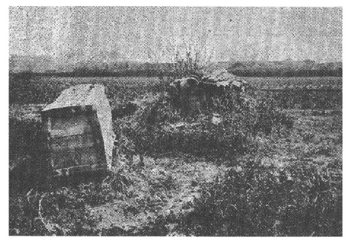

続日本紀に、文武天皇四年飛鳥元興寺の僧道照和尚遷化してその
火葬は天竺に所謂風火水土の四葬の一つで、かの土には古くから行われていたものらしい。そしてその葬法が仏法とともに我が国に伝わって、
解する人はこの文を以て大宝当時のものでなく、今伝わっている令の本文は、養老年間に藤原不比等の修正したものであるから、養老当時の実際を書いたものだと言っている。しかし自分は、種々の確証から令の本文が、養老の際にそう改訂せられたのではなく、この文の如きも当初からのままだと確信しているものである。或いはこれが大宝当時のままの文であっても、その令の出来たのは道照火葬の翌年であるから、この始末のよい葬法を早速法令上に応用したのだと言うかもしれぬ。しかしそれ迄に屍を焼くという風習が少しもなかったものならば、いかにそれが便宜な葬法だからと云っても、どうで火葬のことだから、燎原の火の如く火急に広がったものであろうなどと、洒落て済ますべきものではない。葬儀の如きはことに旧習を重んじて、容易に変化し難いものである。さればよしや今存する令の本文が養老の修正であるとしても、本邦火葬の最初といわれる道照荼毘の後二十年にも足らぬこの短日月間に、これを或る場合における常法として法令上強行せしめるまでに、そう急に進展すべきものではなかろう。
自分は固く信ずる。よしや火葬という事が道照によって始まったとしても、屍を焼くという事は遠い古えから我が国に行われていたのであったとの事を。
我が国では屍体を鄭重に扱って、これを墓に
右は手軽く埋葬せよとの規定であるが、同時に焼屍とか洗骨とかいう事も行われたらしい。
故意に屍体を始末するの目的を以てでなくとも、事実上屍体を焼くという事は、太古以来行われていたに相違ない。天孫
果してしからば続日本紀に、道照和尚栗原の火葬を以て、「天下の火葬此れより始まる也」と書いたのはいかに解すべきか、これは葬送の一つの儀式として、仏式により高貴の御遺骸をも荼毘に附するという様になったことの初めだという訳で、単に屍体を焼くという広い意味のものではあるまい。しかしながらこの火葬の法が極めて簡単であるので、従来屍体を焼くことを以てあえて不思議に思わなかった我が国に歓迎せられて、ついに奈良朝頃に至っては、火葬が一般の風習として認められることになったものであろう。

上海付近の墓地
洗骨の風が古く我が国に存したということは、不幸にして未だ記録の上に的確なる証拠を発見しえぬ。しかし近傍の諸民族間には往々にして古くこの風があった。
我が国においてもまたかくの如きの葬法の古く行われたことは、古墳の実地から往々証明せられるのである。和田千吉君が考古界六巻一号（明治三十九年十一月）において、常陸国小田村の古墳調査の報告中に掲げられた図を見ると、石室の一端に近く二個の頭蓋骨と下齶骨とを正しく並べ、他方に大髄骨脛骨等
事実上我が古墳の中には、とても屍体のままでは並び切れぬという程の極めて狭い石室中に、二人三人ないし五六人の骨が正しく並んで存在している例が珍らしくない。前記小田村の古墳の如きも、幅僅かに二尺三寸の石室内に、二人分の骨を並べて、しかもその傍らには刀剣二本を安置するの余裕を示しているのである。河野清実君の報告（考古学雑誌五巻十一号）によれば、豊後灰土山古墳の如きは、幅僅かに一尺一寸二分ないし九寸五分の狭い石室中に、二人分の骨が背を向け合して並べられてあった。その後自分もその
洗骨がかつて我が国においても行われたであろうとのことについては、自分は既にしばしば歴史地理の誌上（二十五巻五号六頁、三十二巻六号六頁等）に発表しておいた。不幸にして学界の承認を得なかった様ではあるが、しかもそれを立証すべき類例は、かなり多く自分の手許に集まっているのである。けだしこの風は我が石器時代からも存していて、歴史時代にまで引き続き、盛んに行われたものであろう。記録上にこれを見ぬのは、それが普通の事であって、一向珍らしくなかったが為と解するのが至当であるかもしれぬ。播磨風土記
右は洗った骨を、さらに鄭重に墳墓内に葬ったのであって、現に琉球・台湾・南部支那等に行われているのと同様のものであるが、実際上にはかく墓内に葬ることなく、洗った遺骨をそのまま委棄した場合が多かったらしい。それは次の大蔵の研究によって推し測られよう。
大宝の喪葬令には、三位以上及び別祖・氏宗のほかは墓を営むをえず、また墓を営むをうる資格あるものといえども、もし大蔵せんと欲するものは
案ずるに大蔵は火蔵の誤写にして、火蔵は火葬なるべし。令集解の文、「以レ骨除散也」とあり。死骸を割き開きて骨を除散することあるべからず。火葬は骨を除散するなれば、火葬を誤て大蔵と写したること疑ふべからざるか。大宝令を定められし頃、既に仏法盛に行はる。仏家に荼毘の葬あり。文武四年道照遷化、火葬あり。此年律令成れり。令に古令新令あり。古令は大宝令なり。今伝はるは新令、是養老の令なり。養老の令なる故、火葬の事ある筈なり。
と云っている。これに対して古事類苑の案には、貞丈の説妥当ならずとし、古記の記事によれば、「其の地に予め一大穴を鑿ち、火葬の後に其骨を墓に収めずして、之を粉砕し、親疎を択ばず皆此に蔵するを謂ふか」と解している。なるほど貞丈の説は妥当ではない。既に令の古記の註釈があってみれば、その本文が大宝の原文なることは疑いを容れぬものであらねばならぬ。何となれば、古記は古令の註釈たる証拠顕然なるものであるから。しからば「養老の令なるが故に火葬の事ある筈なり」の貞丈の弁明は立たぬ。さればとて古事類苑の案もまた落ち付かぬ感がある。大穴に火葬の遺骨を粉砕して合蔵するでは、古記の以骨除散という事には当り難かろう。窪美保昌氏の令新解には、大蔵を以て「
しからば「大蔵」とは果していかなるものであろうか。勿論屍体を墓に葬るのではなくして、洗骨にしたか、荼毘に附したか、とにかく皮肉を除き去った遺骨を以て、しかるべき場所に散らしてしまうことであらねばならぬ。それを大蔵というのは、墓などという局限の地に蔵めるのでなくして、大きくこれを天地間に蔵するという意味であるかもしれぬ。
骨を除散することは、事実上我が古代には珍らしい事でなかったらしい。淳和上皇崩御の前、遺詔して御骨を砕いて粉となし、これを山中に散ずべく命じ給うた。これに対して中納言藤原吉野は諫諍を試みたが、その説容れられず、いよいよ御葬式に際しては、遺詔の如く荼毘に附し奉った御骨を砕粉し、大原野西山の嶺上に散らし奉ったとある。されば天皇の御為には山陵の役を起さず、この君に限って延喜式にも、諸陵寮の条に山陵の記事がない。これはすなわち骨を除散せしめた大蔵の顕著なる実例と申し奉るべきものであろう。これは至尊の御葬儀として、空前絶後の例ではあるが、しかしながらかくの如きの葬儀は、親王以下庶民の場合において、古来その例多かったものらしい。藤原吉野の奏言に、
昔宇治稚彦皇子は我が朝の賢明なり。此の皇子遺教して、自ら骨を散ぜしむ。後世之に傚ふ。然れども是れ親王の事にして、帝王の迹 にあらず。我が国上古より山陵を起さざるは、未だ聞かざる所なり。
とある。宇治稚彦皇子とは稚郎子皇子の事であろう。皇子薨じて宇治山上に葬るとは日本紀にあるが、散骨の事は記紀その他の古書にかつて見当らぬ。しかしながら藤原吉野の当時には、皇子は散骨の式によって葬られたとの説の信ぜられておった事は疑いなく、そしてそれが流例となって、「後世之に傚ふ」とあってみれば、古来遺骨を散ずるの風のかなり行われていたことは、立派に承認せねばならぬ次第となる。そしてこれ令に所謂「大蔵」ではあるまいか。
大蔵とは骨を除散するを本体とするものであるが、「